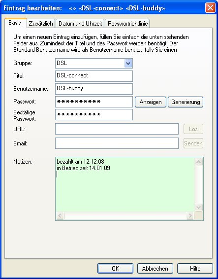

Die meisten Eingabefelder im Basis- und den zusätzlichen Reiter, sind sogenannte Smarte Felder.
Dies bedeutet dass, wenn man sie anklickt, der aktuelle Inhalt dieses Feldes in die Zwischenablage kopiert wird.
Der Hintergrund des Feldes leuchtet grün auf, um anzudeuten dass es kopiert wurde. Zur Zeit werden folgende Felder unterstützt:
Basis
Gruppe
Titel
Anwendername
Passwort
Notizen
URL
E-Mail
Zusätzlich
Autom. Eingabe
Ausführen
Hinweis: Wenn Sie die Strg-Taste gedrückt halten, während sie die Tasten Autom. Eingabe oder Ausführen anklicken, werden keine Variablen umgesetzt bevor sie in die Zwischenablage kopiert werden.
Reiter Basis
Die wichtigsten Elemente sind in diesem Reiter zusammengefasst.

Folgende Informationselemente gehören zu jedem Passworteintrag:
Gruppe: ein Name zum Zusammenfassen aller artverwandten Einträge
Titel: ein 'freundlicher' Name für den Passworteintrag
Benutzername: der eigentliche Benutzername
Passwort: das dazugehörige Passwort
Notizen: allgemeine Notizen zu diesem Eintrag
Nur das Titel- und das Passwortfeld sind Pflichtfelder. Alle anderen sind optional.
Das Feld Notizen ist gedacht für eine kleine Menge Text mit max. 30.000 Zeichen.
Während es möglich ist beim Hinzufügen des Eintrags mehr Zeichen als diese Grenze einzugeben,
werden Warnungen beim wieder Öffnen dieses Eintrags ausgegeben. Das Feld Notizen wird dann bei dieser Grenze
gekappt, wenn der Eintrag bearbeitet wird. Aber, wenn der Eintrag geschützt ist und die Datenbank im Nur Lesen Modus
geöffnet wird, tritt dieses Kappen nicht auf, und kann dadurch komplett gesehen werden.
Das Feld Notizen kann auch mit einem externen Editor bearbeite werden durch Rechts-Klicken inm Feld.
Es soll aber klar sein dass der Inhalt in dieser Zeit auf der Fetsplatte als lesbare Text steht.
Zusätzlich benutzen einige externe Editoren eine schon bestehende Instanz um den Text zu bearbeiten,
mit der Folge dass Password Safe beim Abspeichern diesen Text unverändert im externen Editor belässt.
Wenn der externen Editor dies unterstützt, ist es möglich eine Kommandozeile zu hinterlegen,
die den externen Editor zwingt eine neue Intanz zu benutzen um diesen text zu bearbeiten (zum Beispiel: "-multiInst"
für den Notepad++ editor).
Siehe "Verwalten → Optionen → Verschiedenes".
Wenn sie die Kommandozeile festlegen, sollten sie dies nicht in Gänsefüßchen
einschließen, außer der externe Editor verlangt sie. Der Wert den sie definieren wird
wie er ist gesendet, ohne jede Änderung.
In diesem Reiter kann auch die URL eingestellt werden:
URL: Die URL die sich auf diesen Eintrag bezieht. Wenn dieses Feld nicht leer ist, dann ist die "Los" Taste aktiviert.
Wenn kein Protokoll angegeben ist, wird "http://" angenommen (z.B. "www.foo.net" ist gleich mit "http://www.foo.net").Vorausgesetzt das Feld URL ist nicht leer,
bewirkt ein Drücken der Taste Los dass der Browser zu der eingegebenen Adresse geht. Wenn Sie die Taste Los zusammen mit der Strg Taste drücken,
wird nach dem Öffnen des Browsers auch die Autom. Eingabe ausgeführt. Der nachstehende Hinweis beschreibt die Funktionsweise in allen Einzelheiten.
Email: Die Email-Adresse die sich auf diesen Eintrag bezieht. Wenn dieses Feld nicht leer ist, dann ist die "Senden" Taste aktiviert.
Wenn sie diese Taste drücken, wird die standardmäßige Email-Anwendung geöffnet; im "An:"-Feld wird die Email-Adresse dieses Eintrages vorbelegt.
Der nachstehende Hinweis beschreibt die Funktionsweise in allen Einzelheiten.
Die nachfolgenden Hinweise beschreiben das Verhalten der URL-Eingabe genauer:
Standardmäßig wird Password Safe den Browser verwenden, welchen Ihr PC in der Regel zum öffnen von Internetseiten hernimmt.
Wenn erwünscht, können Sie einen alternativen Browser angeben durch Angabe von '[alt]' in eckigen Klammern vor der URL, z.B. "[alt]http://www.foo.net".
Dies ist nützlich, wenn der Standardbrowser Firefox ist, und Sie wünschen aber auf eine Seite zuzugreifen, die am besten mit dem Internet Explorer funktioniert.
Den alternativen Browser können Sie konfigurieren im Dialogfenster Verwalten->Optionen->Verschiedenes.
Wenn '{alt}' in geschweiften Klammern vor der URL gesetzt wird, dann wird es 'wie-es-ist' dem alternativen Browser übergeben, ohne dass 'http://' hinzugefügt wird,
wenn kein Protokoll definiert ist. Die ist dann sinnvoll, wenn der alternative Browser eine Anwendung mit Fernzugriff ist, z.B. ein SSH Client. [ssh] würde denselben Effekt haben.
Wenn '[autotype]' vor der URL steht, wird Password Safe nach der Anzeige und Aktivierung des Browsers die Funktion Autom. Eingabe ausführen.
Wenn im Feld Autom. Eingabe nichts eingegeben ist, wird der standardmäßige Wert eingesetzt.
Die Email-Adresse entspricht den Standardregeln nach RFC 2368:
Sie können im Feld Email eine oder mehrere Email-Adressen hinterlegen, mit ';' getrennt. Sie sollten Internet-sichere Zeichen verwenden.
Für das Leer-Zeichen sollte ein %20 verwendet werden.
Der Email-Adresse können einige Name-Wert Pärchen angehängt werden. Dem ersten Paar soll das Zeichen '?' vorgesetzt werden,
bei allen anderen muss ein '&' vorgesetzt werden.
subject - gefolgt von Text der im "Betreff" stehen soll.
body - gefolgt von Text der in der Email selber stehen soll.
CC - gefolgt von Adresse(n) die im "CC" (Carbon Copy) stehen sollen.
BCC - gefolgt von Adresse(n) die im "BCC" (Blind Carbon Copy) stehen sollen.
Erstellen eines neuen Eintrag mit Benutzername und Passwort
Die Datenbank öffnen wo der neue Eintrag eingefügt werden soll
Wählen Sie im Menü Bearbeiten > Eintrag einfügen aus
Geben Sie die notwendige Information im Dialogfenster Eintrag Einfügen ein
Hinweis: Wenn ein Gruppenname ausgewählt ist, und dann eine neuer Eintrag eingefügt wird, wird für diesen Eintrag der Gruppenname
im Dialogfenster Füge Eintrag ein vorbelegt. Wenn ein neuer Name im Gruppenfeld eingegeben wird, wird diese Gruppe neu erstellt.
Passwörter generieren und bearbeiten
Wenn gewünscht, können ein eigenes Passwort händisch im Passwortfeld eingegeben werden, oder Password Safe generiert eine neues Passwort
auf Basis der derzeitig gültige Passwortrichtlinien.
Im Dialogfenster Eintrag Einfügen die Taste Generierung klicken
Wenn Sie nicht zufrieden sind mit dem Ergebnis, klicken Sie erneut Generierung, oder geben Sie das Passwort händisch ein.
Hinweis:
Wenn Sie ein "single sign-on" System einsetzen das erlaubt dasselbe Passwort für verschiedene Maschinen/Server/Anwendungen usw. gleichzeitig einzusetzen,
kann mit Password Safe so ein Eintrag entsprechend verwaltet werden. Wenn Sie ein Passwort ändern, werden alle anderen gleichverwandte
Passwörter mit geändert. Diese werden "Alias" Einträge genannt, und wird im Detail hier beschrieben.
Bestehende Einträge bearbeiten
Wählen Sie den Eintrag zum Bearbeiten in der Liste aus
Wählen Sie Eintrag bearbeiten im Bearbeiten Menü aus
Bestehende Einträge bearbeiten in der Baumdarstellung
Wähle den Eintrag aus der Liste aus
Wähle Eintrag bearbeiten im Menü BearbeitenODER
mach ein Rechts-Klick auf den Eintrag und wähle Eintrag bearbeiten
Sie können die Felder die angezeigt werden, wie folgt sofort bearbeiten:
Rechts-Klick auf der Gruppe und wähle Gruppe umbenennenODER
Drücke die Schnelltaste zum Umbenennen (standardmäßig F2) und überschriebe den angezeigten Text (Format ist "titel [benutzername] {passwort}").
Notizen:
Standardmäßig werden Benutzername und Passwort nicht angezeigt. Dies wird eingestellt in den Voreinstellungen (siehe:
Options -> Anzeige). Dies funktioniert hierarchisch, z.B. Passwörter können nur angezeigt werden wenn Benutzernamen angezeigt werden.
Ebenfalls werden Passwörter während der Eingabe standardmäßig verdeckt angezeigt. Um das Passwort zu sehen sollten sie beim Bearbeiten Anzeigen drücken.
Titel und Passwort sind die einzigen Pflichtfelder bei einem Eintrag. Darum behalten sie den alten Wert bei, solange der Eintrag angezeigt wird.
Sie können jedoch den Benutzernamen löschen durch Ausfüllen mit "[]", wenn ein leerer Wert verlangt wird.
Weil eckige und geschweifte Klammern verwendet werden um Benutzername und Passwort einzugrenzen, ist es nicht möglich auf diese Weise einen Eintrag zu ändern
wenn der Eintrag eines dieser Zeichen enthällt. In diesem Fall müssen sie den Eintrag über Bearbeiten -> Eintag bearbeiten oder mit dem Rechts-Klick Menü bearbeiten.
Neue Gruppe einfügen
Wählen Sie Gruppe einfügen im Menü Bearbeiten aus
Geben Sie den Gruppenname ein
Neue Gruppe einfügen in der Baumdarstellung
Wähle Gruppe hinzufügen nach Rechts-Klick aus
Geben Sie den Gruppenname ein
Gruppenname bearbeiten
Rechtsklick auf die Gruppe und wählen Sie Gruppe umbenennen aus der Liste aus
Wähle die Gruppe aus, und drücke die Schnelltaste zum Umbenennen (Standard F2) und
überschreiben sie den Gruppennamen.
Hinweis:
Gruppennamen können verschachtelt werden, durch Setzen eines Gruppennamens in einer anderen Gruppe.
Eine Gruppe kann nicht zu mehreren Gruppen umbenannt werden durch den Menüpunkt oder die Verknüpfung
Gruppe umbenennen, z.B. die Gruppe 'a' kann nicht zu Gruppe 'x.y' umbenannt werden.
Notes:
Group names can be "nested" i.e. placing a group name within/under another group name.
A group cannot be renamed to multiple groups through the Rename Group menu item or
shortcut, i.e., group "a" cannot be renamed to "x.y".
Geschützte Einträge
Wenn ein Eintrag geschützt ist, sind Sie nicht in der Lage irgendein Feld zu verändern. Erst nachdem der Schutz weggenommen ist, sind wieder Änderungen möglich.
Geschützte Einträge sind Rot gekennzeichnet (unten links).